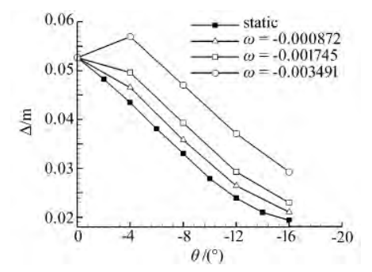
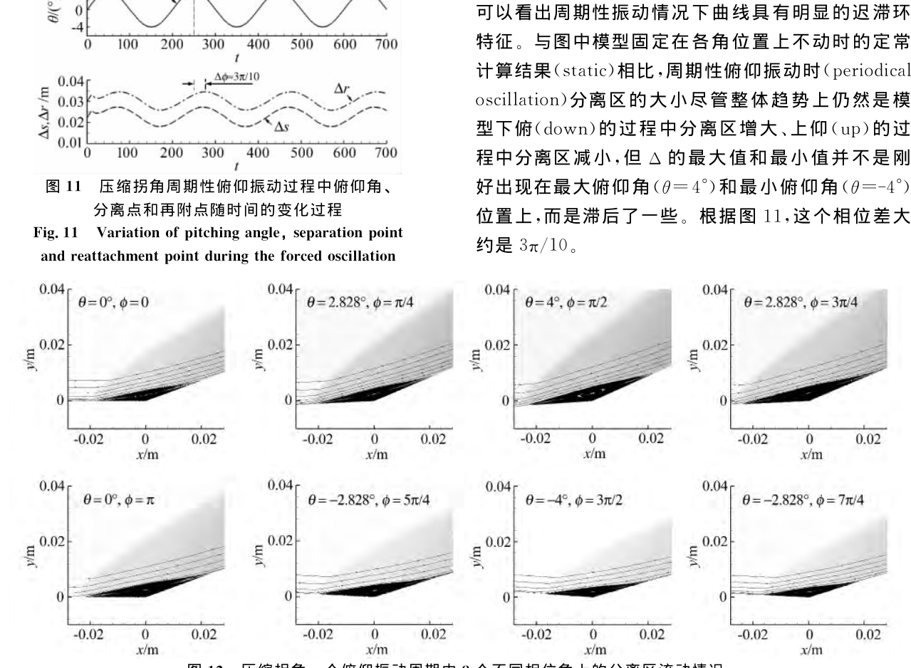
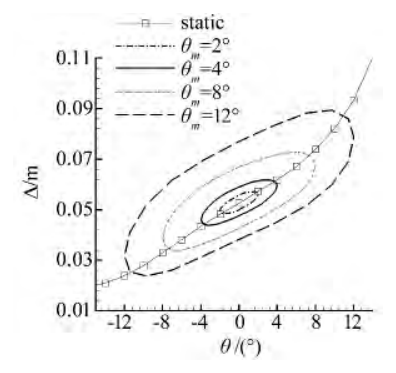
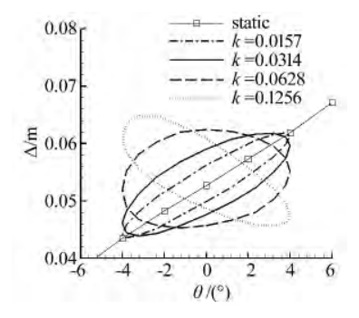

01中文摘要
采用高精度数值方法求解非定常雷诺平均N–S方程和单自由度强迫俯仰运动方程，研究二维压缩拐角在等速抬头/低头和周期性俯仰振动下的非定常激波/边界层干扰，考察角速度、振幅和频率对分离区非定常变化的影响。结果表明：等速抬头时分离区减小，等速低头时增大；周期性俯仰时分离点、再附点和分离区大小均与模型同频变化。与同来流定姿态计算对比，壁面运动产生的非定常迟滞使分离区变化减慢；振幅主要影响分离区变化幅度而对相位影响小，频率则显著影响相位而对幅度影响小。
02阅读说明
数值模拟研究（非定常RANS + 单自由度强迫俯仰运动），《空气动力学学报》2014年第32卷第5期，pp.610-617，全文8页完整。材料含15条图件清单、表1-表3和带页码全文；图2、图3、图5、图6、图8-图15可读，图内具体数值未逐点给出。公式(1)-(4)在文本层有符号缺失，已用PDF第2页核对式(1)-(4)及网格参数。信息完整度较高：来流条件、网格、运动参数、分离区定义齐全；但网格无关性、时间步/子迭代收敛判据、湍流非定常统计窗口未交代。 文章类型：期刊
03一句话核心与三句话摘要
二维20°压缩拐角在等速抬头/低头与周期俯仰下，分离区随姿态角变化并受非定常迟滞调制。
- 已有激波/边界层干扰研究多在飞行器姿态不变假定下开展，而机动、舵效耦合和长/短周期模态不稳定使飞行器处于非定常运动，相关干扰特性认识不足。 原文明确
- 采用五阶WCNS格式和双时间步求解非定常RANS（SA模型），模拟20°压缩拐角等速抬头、等速低头和周期俯仰振动，发现抬头时分离区减小、低头时增大，周期振动时分离点、再附点和分离区同频变化并滞后约3π/10。 原文明确
- 与同角位定常解对比表明姿态角变化是分离区变化主因、非定常迟滞使变化减慢；振幅主要改变分离区变化范围，频率主要改变其相位。 原文明确
04核心内容清单
| 要点 | 类型 | 重要性 | 原文依据 | 属性 |
|---|---|---|---|---|
| 定姿态下8°压缩拐角无分离、16°微弱分离、20°大范围分离并出现分离激波，计算结果与实验阴影图一致。 | 验证结果 | A | p612，图2；第2节 | 原文明确 |
| 20°压缩拐角分离区内计算压力比实验偏高，恢复段与实验一致；作者归因于RANS在强干扰、大分离下的普遍问题。 | 验证局限 | B | p612，图3及正文 | 原文明确 |
| 等速抬头运动时分离区减小，等速低头运动时分离区增大。 | 核心结果 | A | p613，图5、图6；3.2节 | 原文明确 |
| 同角位定常计算中俯仰角绝对值越大分离区越小；运动时分离区变化更慢，证明非定常迟滞减缓变化。 | 核心结果 | A | p614，图8、图9 | 原文明确 |
| 等速运动角速度|ω|减小时，分离区曲线向定常不动曲线收敛。 | 参数趋势 | A | p614，图8及正文 | 原文明确 |
| 固定θ=0°只改变来流马赫数，M增大使分离区减小；表3给出θ=8°/4°/0°/-4°/-8°对应的M=2.46/2.65/2.85/3.04/3.26。 | 参数影响 | A | p614，表3、图10 | 原文明确 |
| 周期俯仰振动时分离点、再附点和分离区大小与模型同频周期变化，相位比俯仰角落后约3π/10。 | 核心结果 | A | p614-615，图11 | 原文明确 |
| 分离区大小随俯仰角形成迟滞环，Δ最大值/最小值滞后最大/最小俯仰角约3π/10。 | 核心结果 | A | p615，图13 | 原文明确 |
| 振幅增大使分离区最大值更大、最小值更小、变化范围更宽，但对相位基本无影响。 | 参数影响 | A | p615-616，图14 | 原文明确 |
| 频率改变对分离区大小范围影响不大，但对相位影响很大；高频时极值角位置甚至与定常相反。 | 参数影响 | A | p616，图15 | 原文明确 |
| 作者给出机制链：抬头→楔上表面膨胀→来流马赫数增大→分离区减小；低头相反。 | 机制 | A | p614，3.2节 | 原文明确 |
| 方法层面采用五阶WCNS、双时间步和SA模型，运动网格503×151、y+<1；但网格无关性与时间步收敛性未交代。 | 方法 | B | p611-613；1.1节、3.1节 | AI概括 |
05引言：研究问题与领域缺口
第0节（p610）指出超声速/高超声速飞行中激波与边界层干扰普遍存在，既产生气动加热，又影响机体控制与发动机进气；回顾Ferri、Dolling、Knight、Zheltovodov等的研究后强调，现有工作主要集中在飞行器姿态不变假定下的干扰特性（包括定姿态下由非定常分离、脉动引起的干扰）。缺口是：高速飞行器对飞行条件变化敏感，机动、大攻角舵效耦合时延、长周期模态欠阻尼/不稳定、短周期模态不稳定以及随机干扰，都使飞行器处于非定常运动；受地面实验技术限制，对非定常运动状态下的激波/边界层干扰缺乏深入了解，难以确定干扰域内的气动力/气动热载荷和最严重临界设计条件。本文目标是：以二维压缩拐角为对象，用五阶WCNS和非定常双时间步求解非定常RANS，模拟等速抬头、等速低头和周期性俯仰振动，分析分离流区的非定常变化，并考察角速度、振幅和频率的影响（p610）。
06流动条件与几何构型
| 项目 | 数值/描述 | 依据 | 备注 |
|---|---|---|---|
| 模型与压缩角 | 二维压缩拐角；验证工况8°、16°、20°；运动研究用20° | p610-611，表1 | 二维计算，展向无限长假定 |
| 来流马赫数（8°） | M∞=2.87 | p611，表1 | |
| 来流马赫数（16°） | M∞=2.85 | p611，表1 | |
| 来流马赫数（20°） | M∞=2.85 | p611，表1 | |
| 总压（三工况） | P0=6.9×10^5 Pa | p611，表1 | |
| 总温（8°） | T0=280 K | p611，表1 | |
| 总温（16°） | T0=268 K | p611，表1 | |
| 总温（20°） | T0=258 K | p611，表1 | |
| 壁温（8°） | Twall=291 K | p611，表1 | |
| 壁温（16°） | Twall=282 K | p611，表1 | |
| 壁温（20°） | Twall=274 K | p611，表1 | |
| 单位雷诺数（8°） | Re∞=60.8×10^6 m^-1 | p611，表1 | |
| 单位雷诺数（16°） | Re∞=65.6×10^6 m^-1 | p611，表1 | |
| 单位雷诺数（20°） | Re∞=69.5×10^6 m^-1 | p611，表1 | |
| 边界层厚度δ（8°/16°/20°） | 26 mm / 26 mm / 25 mm | p611，表1 | 在拐角上游50.8 mm处测量 |
| 位移厚度δ*（8°/16°/20°） | 6.7 mm / 6.3 mm / 6.6 mm | p611，表1 | 同上 |
| 动量厚度θ（三工况） | 1.3 mm | p611，表1 | 数值计算通过调整上游平板长度匹配该值 |
| 边界层测点位置 | x_upstream=-50.8 mm（相对拐角） | p611，表1 | |
| 定姿态网格 | 256×131（流向×法向），物面首层1×10^-6 m，y+<1 | p611，1.2节 | |
| 运动网格 | 503×151，增加10°楔面、球头钝化直径/平板长度≈1/10000 | p612-613，3.1节 | |
| 等速低头角速度 | ω=+0.001745（低头，逆时针） | p613，3.2节 | 低头θ为正 |
| 等速抬头角速度系列 | ω=-0.000872、-0.001745、-0.003491（抬头，顺时针） | p614，图8 | 正文先给±0.001745，图8再给三档 |
| 周期俯仰基准 | θm=4°，k=0.0314，T=200 | p614，3.3节 | |
| 振幅系列 | θm=2°、4°、8°、12°，k=0.0314 | p615，3.3节 | |
| 频率系列 | k=0.0157、0.0314、0.0628、0.1256，θm=4° | p616，3.3节 | |
| 分离判据 | 表面摩阻系数Cf=0 | p614，图7 | Δ=Δs+Δr |
| 壁面边界条件 | 粘性无滑移V=V_wall；虚拟边界V_g=2V_wall-V_i，切向无滑移、法向无穿透 | p611，1.2节 | |
| 湍流模型 | 一方程SA模型 | p611，1.1节 |
07核心现象与关键参数
| 参数 | 定义 | 数值 | 关系/说明 | 依据 |
|---|---|---|---|---|
| 分离区大小Δ | Δ=Δs+Δr；Δs为分离点到拐角距离，Δr为再附点到拐角距离，均由Cf=0确定 | 图8-图15给出随θ、ω、θm、k的变化曲线；正文未给具体毫米值 | Δ随|θ|增大而减小；抬头运动时减小、低头时增大 | p614，图7-图10 |
| 无量纲角速度ω | θ=ωt=(ω̂L_ref/V̂∞)t，L_ref为参考长度，V̂∞为来流速度 | ±0.001745；抬头系列-0.000872、-0.001745、-0.003491 | |ω|越小，运动曲线越接近定常解 | p611式(3)、p613-614 |
| 角振幅θm | 周期俯仰θ=θm sin(kt)中的振幅 | 基准4°；系列2°、4°、8°、12° | θm增大→Δ变化范围变宽，相位基本不变 | p611式(4)、p615-616 |
| 无量纲减缩频率k | θ=θm sin(kt)中的无量纲频率；k=0.0314对应振动周期T=200 | 基准0.0314（T=200）；系列0.0157、0.0314、0.0628、0.1256 | k增大→相位滞后增大，Δ范围变化不大 | p611式(4)、p614-616 |
| 相位滞后 | 分离点/再附点/分离区相对俯仰角θ的相位差 | 约3π/10 | 周期振动与迟滞环均约3π/10 | p614-615，图11、图13 |
| 马赫数对应关系 | 固定θ=0°时按各姿态角波后条件取的来流马赫数 | θ=8°/4°/0°/-4°/-8° ↔ M=2.46/2.65/2.85/3.04/3.26 | M增大→分离区减小 | p614，表3 |
| 上游平板长度L | 为匹配实验边界层动量厚度而调整的平板长度 | 8°/16°/20°分别为2.07 m、2.09 m、2.12 m | 使x=-50.8 mm处θ=1.3 mm与实验一致 | p611，表2 |
| 壁面法向网格尺度 | 物面首层网格距离 | 1×10^-6 m，y+<1 | 保证粘性底层分辨 | p611，1.2节 |
| 网格量 | 流向×法向网格数 | 定姿态256×131；运动503×151 | 运动网格在分离区附近流向加密 | p611-613 |
08方法与数据
控制方程为一般曲线坐标系下的非定常RANS（式1），湍流模型为一方程SA模型；时间方向用隐式非定常双时间步、时间导数二阶精度；空间项用五阶精度WCNS，采用六阶单元中心型差分离散无粘导数（式2）、Steger-Warming矢通量分裂，并以非线性加权抑制跨间断插值振荡（p611）。定姿态计算网格256×131（流向×法向），物面首层网格1×10^-6 m，保证y+<1；姿态运动网格改为503×151，为模拟平板前缘非定常绕流增加10°楔面并采用球头钝化（球头直径/平板长度约1/10000），并在分离区附近流向加密（p611-613）。验证：模拟Settles等8°、16°、20°压缩拐角实验，来流M∞约2.85、湍流边界层；通过调整上游平板长度使x=-50.8 mm处动量厚度θ=1.3 mm与实验一致（表1、表2），8°未分离、16°微弱分离、20°大范围分离；图2阴影图和图3表面压力与实验对比，8°/16°吻合较好，20°分离区压力偏高，作者归因于RANS在强干扰、大分离问题上的普遍不足（p611-612）。运动实现：模型绕拐角处定轴单自由度旋转，网格与物体刚性固联并满足几何守恒律∂J^-1/∂t≡0，初场取定常收敛解；壁面满足粘性无滑移V=V_wall，内点与虚拟边界满足切向无滑移、法向无穿透V_g=2V_wall-V_i（p611）。等速运动θ=ωt（式3，ω为无量纲角速度），周期运动θ=θm sin(kt)（式4，θm为角振幅、k为无量纲减缩频率）；低头θ取正、抬头θ取负（p611）。分离区定义Δ=Δs+Δr，Δs、Δr分别为分离点、再附点到拐角的距离，分离/再附点由表面摩阻系数Cf=0确定（p614，图7）。
| 项目 | 内容 | 依据 | 备注 |
|---|---|---|---|
| 控制方程 | 一般曲线坐标系非定常RANS：∂Q/∂τ+∂F/∂ξ+∂G/∂η+∂H/∂ζ=(1/Re)(∂Fv/∂ξ+∂Gv/∂η+∂Hv/∂ζ)，Q=J^-1(ρ,ρu,ρv,ρw,ρe)^T | p611，式(1) | 守恒变量含总能，粘性通量含湍流模型贡献 |
| 湍流模型 | 一方程SA模型 | p611，1.1节 | |
| 时间推进 | 隐式非定常双时间步，时间导数二阶精度 | p611，1.1节 | |
| 空间格式 | 五阶精度WCNS；六阶单元中心型差分离散无粘导数；Steger-Warming矢通量分裂；非线性加权抑制跨间断振荡 | p611，式(2)及正文 | 式(2)给出ξ方向通量导数模板 |
| 定姿态网格 | 256×131，物面首层1×10^-6 m，y+<1 | p611，1.2节 | |
| 运动网格 | 503×151；10°楔面补充平板下方计算域；球头钝化直径/平板长度≈1/10000；分离区附近流向加密 | p612-613，3.1节 | |
| 网格运动 | 网格与物体刚性固联，满足几何守恒律∂J^-1/∂t≡0 | p611，1.2节 | |
| 边界条件 | 壁面V=V_wall；内点V_i与虚拟边界V_g满足切向无滑移、法向无穿透V_g=2V_wall-V_i | p611，1.2节 | |
| 初始场 | 定常收敛解作为零时刻初场；初始俯仰角为零 | p611，1.2节；p613 | |
| 实验验证 | Settles等8°/16°/20°压缩拐角；表1来流与边界层参数；通过调整上游平板长度匹配θ=1.3 mm；对比阴影图与表面压力 | p611-612，表1、表2、图2、图3 | |
| 分离区提取 | Δ=Δs+Δr，分离/再附点由Cf=0确定 | p614，图7 | |
| 参数研究 | 等速抬头/低头角速度、周期振动振幅θm与频率k | p613-616 | |
| 网格无关性 | 文中未提及 | 全文 | 仅有y+<1说明，无网格收敛性曲线 |
| 时间步与子迭代收敛判据 | 文中未提及 | 全文 | |
| 不确定度/重复性 | 文中未提及（数值研究，无实验不确定度） | 全文 |
09核心推导与公式
原文未给出从守恒律出发的完整解析推导；以下仅列出材料中可核对的定义或建模链，不补写教科书推导。
本文为纯数值模拟，未给出解析推导。作者只列出非定常RANS控制方程（式1）、WCNS空间离散（式2）、等速俯仰运动方程（式3）和周期俯仰运动方程（式4），随后直接进行数值求解与结果分析；分离区变化规律来自计算曲线对比，而非解析解。
关键假设
- 二维压缩拐角流动，展向无限长（二维RANS）
- 湍流由一方程SA模型封闭
- 完全气体、一般曲线坐标系；粘性通量按原文所称粘性通量处理（未展开）
- 网格与物体刚性固联，满足几何守恒律∂J^-1/∂t≡0
- 壁面粘性无滑移，虚拟边界切向无滑移、法向无穿透
- 等速运动角速度为常数；周期运动为单自由度正弦俯仰θ=θm sin(kt)
- 初始场为同来流条件下的定常收敛解
适用边界：没有可评价的推导适用边界；数值结论受二维、单一20°拐角、SA-RANS、固定Re/壁温、有限振幅频率组合限制，且未给网格无关性与时间步收敛性。
10结果：主要发现与关键证据
定姿态验证（p612，图2、图3）：8°激波紧贴物面、无分离；16°存在微弱分离；20°形成较大范围分离并出现明显分离激波。8°、16°表面压力与实验吻合较好；20°分离区内计算压力比实验偏高、恢复段与实验一致。动姿态（p613，图5、图6）：等速抬头θ=(0°,-4°,-8°,-12°,-16°)时分离区减小，等速低头θ=(0°,4°,8°,12°,16°)时分离区增大。与同角位定常解对比（p614，图8、图9）：定常时俯仰角绝对值越大分离区越小；运动时分离区变化比定常慢，体现非定常迟滞，且角速度|ω|越小曲线越向定常解收敛。马赫数影响（p614，表3、图10）：固定θ=0°、只改变来流马赫数，取M=2.46、2.65、2.85、3.04、3.26（分别对应θ=8°、4°、0°、-4°、-8°时的波后马赫数），M增大时分离区减小；机制为抬头→楔上表面膨胀→来流马赫数增大→分离区减小，低头→压缩→马赫数减小→分离区增大。周期俯仰（θm=4°、k=0.0314、T=200；p614-615，图11-图13）：分离点Δs、再附点Δr及分离区Δ均与俯仰角同频周期变化，相位落后约3π/10；Δ-θ曲线呈明显迟滞环，Δ最大值/最小值滞后最大/最小俯仰角约3π/10；下俯过程分离区增大、上仰过程减小。振幅影响（θm=2°、4°、8°、12°，k=0.0314；p615-616，图14）：振幅对曲线相位基本无影响，但振幅增大使Δ最大值更大、最小值更小，整体变化范围变宽。频率影响（k=0.0157、0.0314、0.0628、0.1256，θm=4°；p616，图15）：不同频率下Δ最大值/最小值差异不大，但相位差异明显；低频k=0.0157时最大/最小Δ出现在最大/最小俯仰角，频率增大后相位滞后增大，k=0.0628、0.1256时极值角位置甚至与定常情况完全颠倒。
| 发现 | 证据 | 证据类型 | 强度 | 位置 | 属性 |
|---|---|---|---|---|---|
| 等速抬头运动使压缩拐角分离区减小，等速低头运动使分离区增大。 | 图5给出抬头θ=0°,-4°,-8°,-12°,-16°五个角位置的流场，图6给出低头θ=0°,4°,8°,12°,16°的流场；正文明确总结该趋势。 | 数值流场对比 | 强 | p613，图5、图6；3.2节 | 原文明确 |
| 同来流条件下，固定角位的定常计算中俯仰角绝对值越大分离区越小；运动时分离区变化更慢，体现非定常迟滞。 | 图8将等速抬头运动曲线与各角位定常解（static）对比，运动曲线位于定常曲线之间/变化更缓；图9对低头给出类似结果。 | 定常/非定常对比 | 强 | p614，图8、图9 | 原文明确 |
| 等速运动角速度越小，分离区随俯仰角的变化曲线越接近定常不动结果。 | 图8给出ω=-0.000872、-0.001745、-0.003491三条抬头曲线，随|ω|减小向static曲线收敛。 | 参数趋势 | 强 | p614，图8 | 原文明确 |
| 来流马赫数增大使20°压缩拐角分离区减小；姿态角通过改变来流马赫数影响分离区。 | 表3列出θ=8°/4°/0°/-4°/-8°对应的M=2.46/2.65/2.85/3.04/3.26；图10给出Δ随M单调减小。 | 参数扫描 | 强 | p614，表3、图10 | 原文明确 |
| 周期俯仰振动时分离点、再附点和分离区大小与模型同频周期变化，相位落后俯仰角约3π/10。 | 图11给出前3.5个周期内θ、Δs、Δr的时间历程，三者同频且Δs/Δr滞后；图13的Δ-θ迟滞环极值同样滞后约3π/10。 | 时间历程/迟滞环 | 强 | p614-615，图11、图13 | 原文明确 |
| 振幅增大显著扩大分离区变化范围，但对相位影响很小。 | 图14给出θm=2°,4°,8°,12°的Δ-θ曲线；振幅越大Δ最大值越大、最小值越小，曲线相位基本重合。 | 参数扫描 | 强 | p615-616，图14 | 原文明确 |
| 频率改变对分离区大小范围影响不大，但对相位影响很大；高频时Δ极值角位置甚至与定常相反。 | 图15给出k=0.0157、0.0314、0.0628、0.1256的Δ-θ曲线，范围接近而相位依次滞后；低频极值位于最大/最小θ，高频极值角位置颠倒。 | 参数扫描 | 强 | p616，图15 | 原文明确 |
| 20°压缩拐角分离区内RANS压力高于实验，恢复段与实验一致。 | 图3(c)表面压力分布与Settles实验对比；作者引用Knight综述称这是RANS模拟强干扰、大分离的普遍问题。 | 验证对比 | 中 | p612，图3；第2节 | 原文明确 |
11机制解释与论证链
作者把运动导致分离区变化的机制分为两部分（p613-614）：其一是姿态角改变使来流在楔上表面膨胀或压缩，从而改变拐角区来流边界层的马赫数——抬头→膨胀→M增大→分离区减小，低头→压缩→M减小→分离区增大（表3、图10给出定量对应）；其二是壁面运动带来的非定常迟滞，使分离区对姿态角的响应落后于准定常值，表现为运动曲线比同角位定常曲线变化更慢、周期振动时Δ-θ形成迟滞环且相位落后约3π/10。定常/非定常对比说明前者是主因、后者是调制因素。该机制解释为作者原文明确；其中“振幅改变分离区容量、频率改变响应时间尺度”的表述是AI概括。
12讨论：结论、贡献与局限
作者把运动引起分离区变化的机制拆成两部分（p613-614）：一是姿态角变化改变流动条件，二是壁面运动速度等非定常效应。定常对比（图8、图9）显示，仅姿态角变化就能重现“抬头减小、低头增大”的趋势，故姿态角是主因；运动曲线相对定常曲线的偏离则归因于非定常迟滞，使分离区变化减慢。进一步，作者注意到抬头/低头时来流在楔上表面膨胀/压缩，使拐角区来流边界层的马赫数改变，于是固定θ=0°只改马赫数（表3、图10），证明M增大使分离区减小，从而给出“抬头→膨胀→M增大→分离区减小；低头→压缩→M减小→分离区增大”的机制链（p614）。周期振动中相位滞后约3π/10，且频率越高滞后越大，作者用非定常迟滞效应增强解释；振幅只改变Δ范围而不改变相位、频率主要改变相位而范围影响小（p615-616）。局限在于：二维、单一20°拐角、SA-RANS，未给网格无关性、时间步收敛性和非定常统计窗口，也没有非定常实验直接验证；20°分离区压力偏高说明强分离定量精度有限；只考察一个正角速度系列和有限振幅/频率组合，未涉及三维、锥形流、热流与湍流非定常。
作者结论
作者结论（p616，第4节）：(1) 压缩拐角等速抬头运动时分离区减小，等速低头运动时分离区增大；周期性俯仰振动时分离点、再附点位置及分离区大小形成与模型同频的周期性变化。(2) 与相同来流条件下定姿态计算对比表明，模型姿态角变化（引起流动条件变化）是分离区大小变化的主要原因，而模型运动的非定常迟滞作用使这种变化减慢。(3) 姿态角改变引起来流马赫数变化，从而对分离区产生较大影响：抬头→气流膨胀→来流马赫数增大→分离区减小；低头→压缩→马赫数减小→分离区增大。(4) 周期俯仰振幅增大后分离区大小变化范围明显扩大、对相位影响不大；振动频率改变对变化范围影响不大，但对相位影响十分明显。
主要贡献
- 把单自由度强迫俯仰运动引入二维压缩拐角SBLI，系统比较等速抬头、等速低头与周期振动三种运动方式。
- 用同角位定常计算作为对照，将姿态角效应与壁面运动非定常迟滞分离，明确前者为主因。
- 给出振幅主要改变分离区变化范围、频率主要改变相位的区分，并量化相位滞后约3π/10。
- 通过固定θ=0°只改马赫数，建立姿态角—来流马赫数—分离区的机制链。
局限与未解决问题
作者承认的局限：20°压缩拐角分离区内RANS压力比实验偏高（p612），说明强分离定量精度有限；地面实验技术限制使非定常运动状态下的干扰缺乏深入了解（p610，属背景性表述）。AI识别的局限：仅二维、单一20°拐角、单一SA模型；未给网格无关性、时间步/子迭代收敛判据和非定常统计窗口；仅一个正角速度系列与有限振幅/频率组合，不能据此确定一般标度律；未讨论三维/锥形流、展向效应、湍流非定常、壁面热流与真实飞行Re；周期振动结果依赖初始定常场和达到周期稳态的程度，文中未说明取舍周期数。
13对高速流动与工程的意义
对高速飞行器机动、舵面偏转或机体俯仰引起的压缩面分离，本文给出可用的定性/半定量趋势：准定常假设会高估分离区随姿态角的即时响应，实际存在约3π/10的相位滞后；提高俯仰频率主要改变相位而非分离区幅值，增大振幅则主要扩大分离区范围。这对进气道压缩面、隔离器前缘、舵面前缘的载荷/热环境评估有参考价值（AI推断）。但不能直接回答三维、湍流高频、真实Re、强热流或大分离非定常频谱问题；20°分离区压力偏高的验证结果也提示定量使用需谨慎。
14核心图件




15可引用原文素材
| 原文短句 | 可支持的观点 | 位置 | 使用建议 |
|---|---|---|---|
| “压缩拐角等速抬头运动时分离区减小、等速低头运动时分离区增大” | 核心趋势 | p610，摘要 | 可直接引用的结论句 |
| “非定常迟滞作用的影响减缓了分离区的变化” | 迟滞机制 | p614，3.2节 | 解释运动曲线偏离定常解 |
| “分离点和再附点的相位比俯仰角落后约３π／１０” | 相位滞后定量 | p614，3.3节 | 引用相位差数值 |
| “振幅的改变对曲线相位基本没有影响” | 振幅作用 | p615，3.3节 | 区分振幅与频率作用 |
| “振动频率的改变对分离区大小的相位变化影响很大” | 频率作用 | p615，3.3节 | 区分振幅与频率作用 |
| “压缩拐角抬头（低头）→气流发生膨胀（压缩）” | 姿态角改变导致膨胀/压缩 | p616，结论(3) | 机制链前半段引用 |
| “与相同来流条件下定姿态计算结果进行对比分析表明” | 定常对照方法 | p616，结论(2) | 方法依据 |
| “分离区内数值计算的压力比实验值偏高” | 验证局限 | p612，第2节 | 说明RANS定量不足 |
16最终核验
| 核验项 | 结论 |
|---|---|
| 仅基于全文 | 是。全部内容来自bundle的metadata、图件清单和带页码全文；公式(1)-(4)及网格参数用PDF第2-3页核对，未使用外部文献或知识。 |
| A 级要点有依据 | 是。A级要点（抬头/低头趋势、定常对比、迟滞、马赫数影响、同频与3π/10滞后、振幅/频率作用）均有图5、图6、图8-图15或表3及正文页码支撑；无法逐点读取的图内数值未写成具体数字。 |
| 属性标注 | 是。three_sentence、core_points、findings均标注原文明确/AI概括/AI推断；机制段中已注明哪一句为AI概括。 |
| 覆盖范围 | 完整读取8页PDF（PAGE 1-8）及15条图件清单；IMRaD四节、工况、参数、方法、推导状态、机制、发现、结论、局限、意义、引文、图表、核验均已覆盖。 |
| 无编造 | 是。未编造页码、图号、公式或数据；正文未给分离区毫米值时写图8-图15给出曲线、正文未给具体数值；网格无关性、时间步收敛性等缺失项写文中未提及。 |
需回原文确认
- 图8中ω=-0.000872、-0.001745、-0.003491三条曲线的初始时刻与时间窗是否一致？是否都已达到准稳态？
- 20°分离区压力偏高的幅度是多少？作者只作定性归因，未给定量误差。
- 网格无关性、时间步与双时间步子迭代收敛判据均未给出，503×151是否足够分辨分离区非定常运动？
- 周期振动结果取了多少个周期？图11只显示前3.5个周期，是否已进入周期稳态？
- 壁面运动时Cf=0提取分离点/再附点的参考系与符号约定如何？运动壁面下Cf的零值是否仍严格对应分离？
- 图14、图15中Δ的最大/最小值具体是多少？正文只有趋势描述。
- 二维结果对有限展长、三维压缩拐角或锥形流的适用性未讨论。
17关联文献
依据标签、板块、构型与作者脉络自动关联，可据此追踪同一问题的前序与后续工作。
18引用格式
选择期刊风格后复制；出处保留原刊名。BibTeX 可直接用于 LaTeX。
引用格式
赵云飞, 刘伟, 刘绪 & 邓小刚 2014 非定常运动下的激波/边界层干扰分离特性研究. 空气动力学学报 32 (5), 610–617. https://doi.org/10.7638/kqdlxxb-2014.0089
PDF上传 PDF 并更新本页
本页缺少全文、摘要或图件时，可在浏览器本地补入 PDF。解析完全在本机完成，不上传网络；完成后会更新本页的 PDF 打开链接、原摘要、IMRaD 机器抽取、关键句与含图页面。复杂的公式语义与中文深度解读仍以原文和既有精读记录为准。